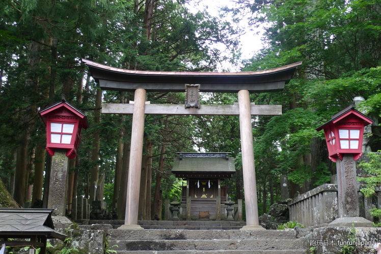
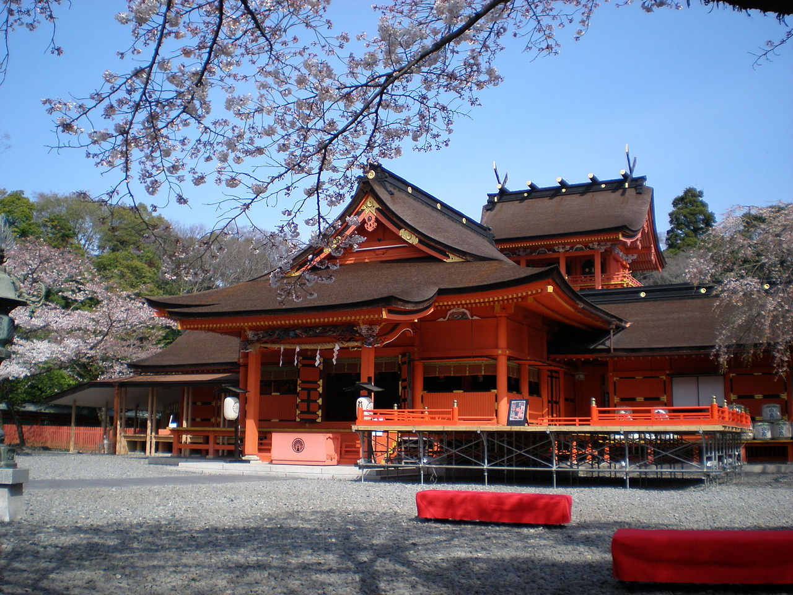

Symbolisme religieux
Le mont Fuji est une montagne sacrée depuis le viie siècle. De nombreux synonymes japonais du mont Fuji rendent eux aussi compte de son caractère religieux. Dans le shintoïsme, la légende raconte qu'un empereur ordonna de détruire au sommet de la montagne un élixir d'immortalité qu'il détenait : la fumée qui s'en échappe parfois serait due à ce breuvage qui se consume. De plus, selon la tradition, les divinités shintô Fuji-hime et Sakuya-hime y habiteraient46 tout comme Kono-banasakuya-hime, « La princesse qui fait fleurir les arbres » (en particulier les cerisiers).
Le bouddhisme vénère quant à lui sa forme rappelant le bouton blanc et les huit pétales de la fleur de lotus. Toutes ces raisons font que son ascension est interdite aux femmes jusqu'en 1872 : une chapelle appelée Nyonin-do (« refuge des femmes ») leur permet d'attendre à l'abri leurs maris, fils ou frères.
